balik ke awal
membuat item menjadi kecil
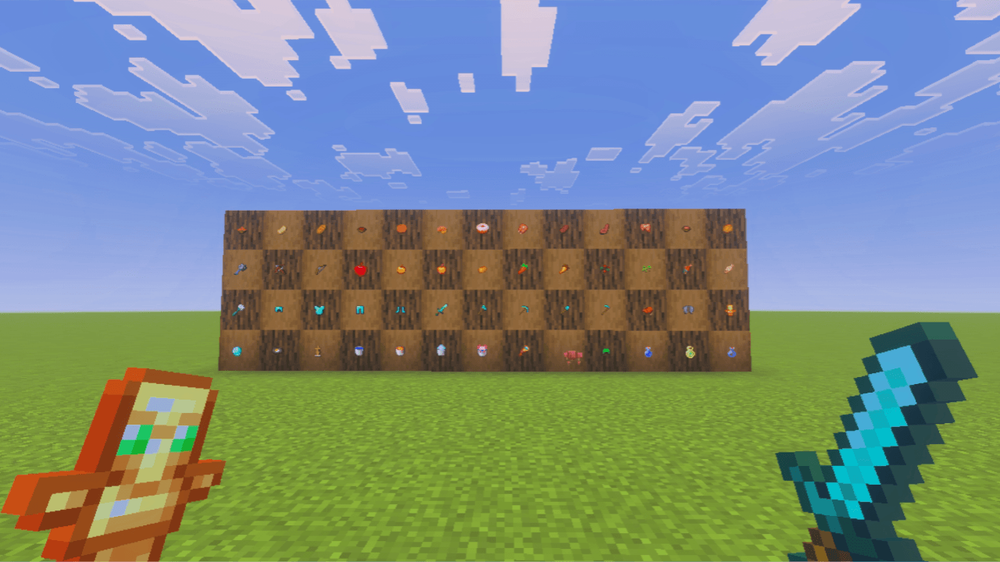
[DETAIL TEXTURE PACK]
File Size=2.39MB
MOD curseforge
menambah kan ui jam dan kompas di atas bar
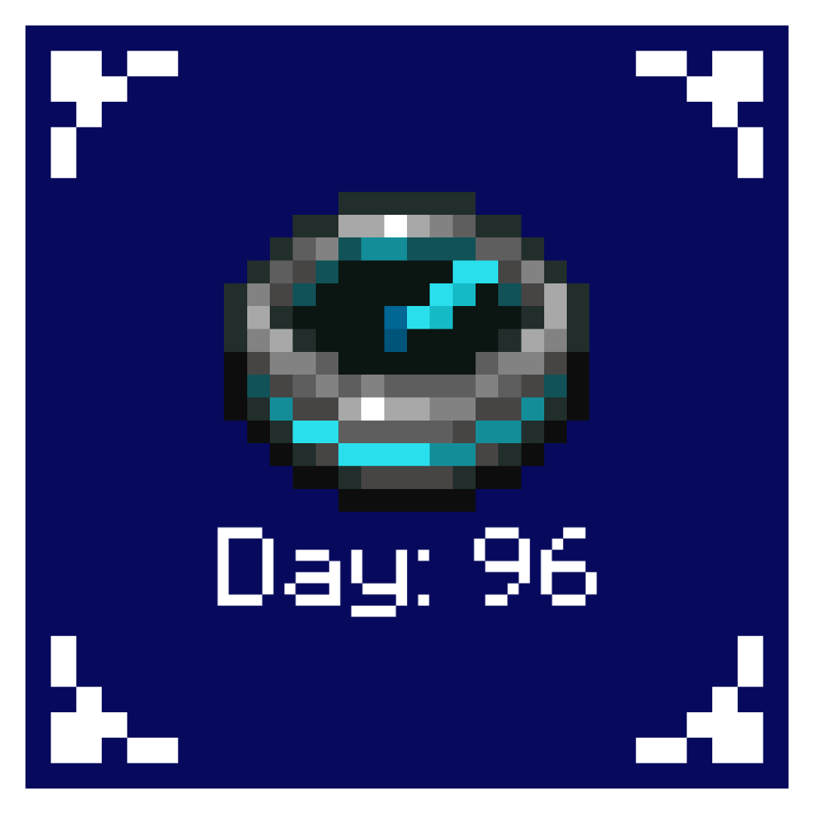
[DETAIL TEXTURE PACK]
File Size=33.41KB
MOD mediafire
membuat tanah penuh dengan rumput seperti minecraft java
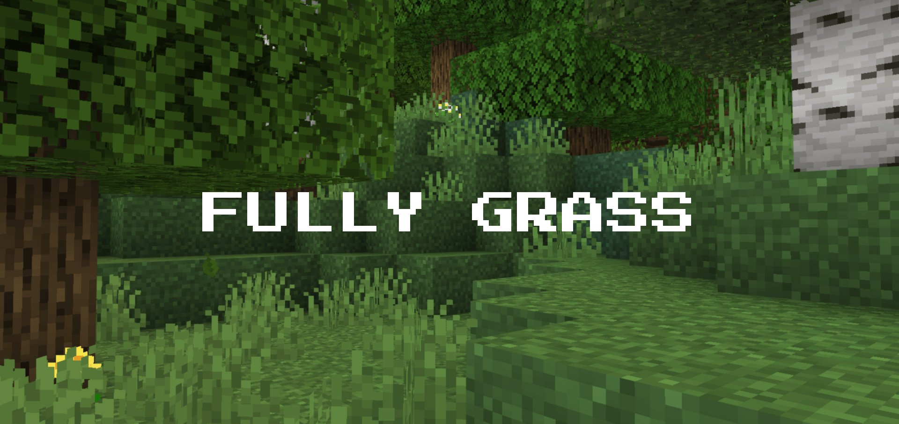
[DETAIL TEXTURE PACK]
File Size=358.30KB
MOD curseforge
membuat kaca jadi seperti java
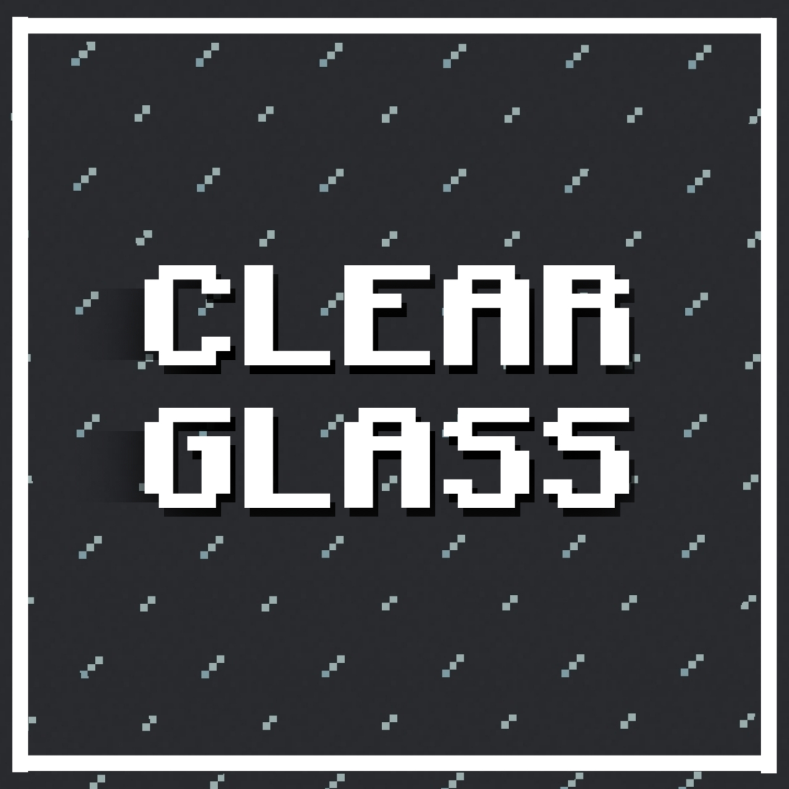
[DETAIL TEXTURE PACK]
File Size=223.84KB
MOD curseforge
melihat seberapa kenyang saat makan roti dan lain-lain
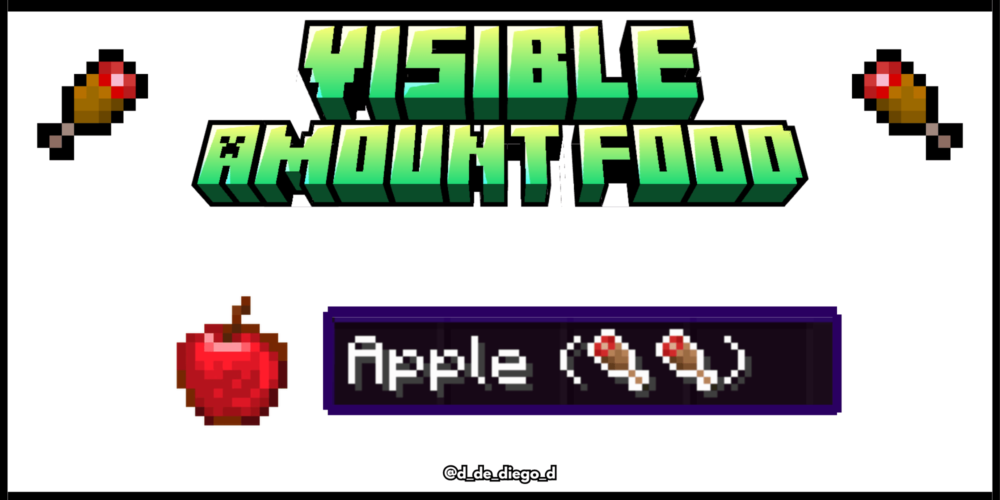
[DETAIL TEXTURE PACK]
File Size=136.03KB
MOD curseforge
merubah elytra menjadi seperti sayap ender dragon
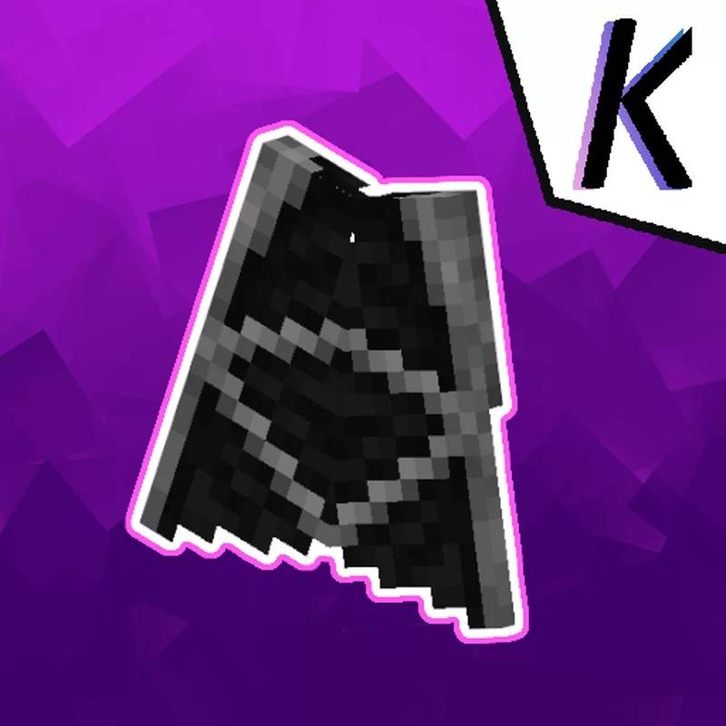
[DETAIL TEXTURE PACK]
File Size=532.59KB
MOD curseforge
membuat daun di pohon jadi realistis
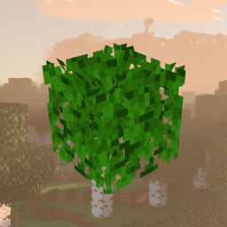
[DETAIL TEXTURE PACK]
File Size=712.43KB
MOD curseforge
Membuat teksture armor Minecraft jadi lebih bagus
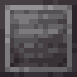
[DETAIL TEXTURE PACK]
File Size=774.54KB
MOD mediafire
membuat rumput dan block jadi ada garis putih
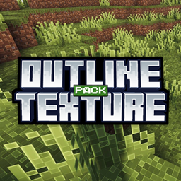
[DETAIL TEXTURE PACK]
File size tergantung pilih yang mana
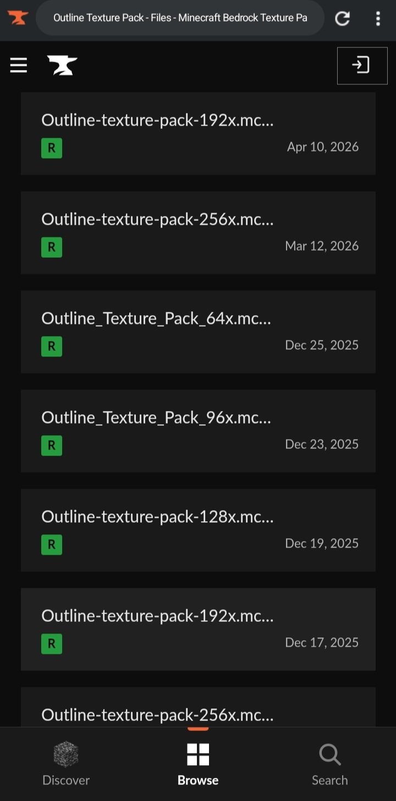
MOD curseforge
membuat semua item ada info kekenyangan dan lain lain
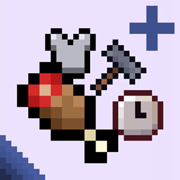
[DETAIL TEXTURE PACK]
File Size=1.16MB
MOD curseforge
texture-packs kaya action and stuff nambah animasi dan yang lainnya lebih baik ini dari pada bajak haram tauuu
[DETAIL TEXTURE PACK]
File Size=4.70MB
MOD curseforge